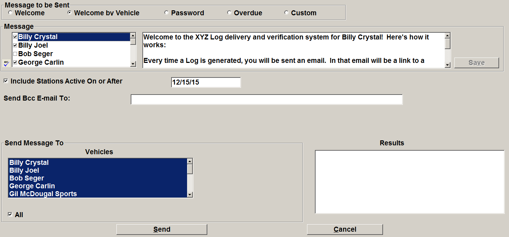

Emails by Vehicle Screen
If you are using the Counterpoint Affidavit System, you have the ability to send mass and individual emails to affiliates through the Emails by Vehicle screen. These emails are sent to the personnel defined on the Stations -> Personnel screen that have a valid email address and that have the “Aff-Email” checkbox checked.
There are six types of emails available on the Emails by Vehicle screen:
- Welcome: This email message is used to introduce new affiliates to how they will access logs and affidavits through the Counterpoint Affidavit System.
- Welcome by Vehicle: Allows custom welcome email to be sent by vehicle.
- Password: Use this email type to send the station password to the station personnel. Starting with version 8.1, if web version 3 is used, then the Password option is not shown, as web version 3 requires individual passwords for each station user, rather than a single password per station, and management of user account passwords is handled through the Counterpoint Affidavit system.
- Overdue: Sends an email reminder to all affiliates who meet the definition of overdue as defined in Site Options -> Messages -> Overdue. Each email will contain a custom list of their overdue weeks.
- Missed: Reminds station personnel about unresolved missed spots. (Version 7.1 and above only.)
- Custom: Use the custom option to create an email with custom text.
The standardized text that appears in the Message field for the Welcome, Welcome by Vehicle, Password, and Overdue emails is pulled from the Affiliate Site Options -> Messages screen. It can also be typed over on the Emails by Vehicle screen, and saved if needed by pressing the Save button (the Save button is not available for the Custom email text). Note: when custom text that was entered on the Emails by Vehicle screen is saved, it overwrites the default text saved in Site Options.
Note that the maximum number of characters allowed in the Message field is 1,020. For the Custom email, you can also enter a custom subject line (limited to 75 characters).
Sending Vehicle Emails
To send a Welcome, Password, or Overdue email:
- Select the Welcome, Password, or Overdue radio button as needed.
- Review the Message text and edit it if needed. If the text is changed, the Save button becomes enabled. Pressing the Save button saves newly entered text, overwriting the text saved in Site Options so that the new text will become the default text. (If the text is blanked out, saving will be disallowed.)
- The “Include Stations Active On or After” date allows you to enter a date so that any agreement that has expired by that date will be filtered out from the list of recipients (to prevent a station that is no longer affiliated with the selected vehicle from getting a no longer relevant email).
- “Send Bcc Email To” allows you to enter a “blind copy” email address.
- “For any stations carrying more than one selected vehicle, eliminate duplicate emails”: check on this option if you wish to prevent a station from receiving duplicate emails if they’re affiliated with more than one of the vehicles selected from the Vehicles list. For example, if you are sending a Password email, it would be appropriate to check this checkbox to prevent any stations affiliated with more than one vehicle from getting two password emails (the passwords are set at the station level, not at the agreement level, so they only need one).
- Select the vehicles to use from the Vehicles list. Any personnel with a valid email address and with the “Aff-Email” checkbox selected on the Stations Personnel screen for stations affiliated on or after the entered active date for the selected vehicle will be emailed when pressing Send.
Note: for the Overdue email, the “Honor Suppress Notices” setting refers to whether the “suppress overdue notices” setting on each agreement should be honored (used) or disregarded.
At the start of the email process, the system checks for invalid email addresses and notifies the user if invalid email addresses are encountered. If an email needs to be sent to a station that has no personnel with an email address, a warning message will appear at the end of the process that it was unable to send an email to that station.
Sending Welcome by Vehicle Emails
The Welcome by Vehicle email can be used when there is custom text that needs to be sent by vehicle. The custom text can be entered in Affiliate Site Options on the Messages tab.

To send a Welcome by Vehicle email:
- On the Emails by Vehicle screen, select the "Welcome by Vehicle" radio button.
- In the Message area, all the vehicles that have custom text defined (in Affiliate Site Options) will have a checkmark next to the vehicle name. Note: the custom text can be overridden by selecting the vehicle and entering text in the message box on the right side of the screen. If text is entered on this screen, it can be saved by pressing the Save button. This will overwrite the text saved in Site Options with the newly entered text, and it will become the new default text.
- The "Include Stations On or After" field is used to populate the station list (for example, to filter out stations where the agreements have expired as of a certain date).
- The list of vehicles in the lower left corner is used to select the vehicles that will be emailed. If a single vehicle is selected, you can choose which affiliated stations to email from the list of stations. If multiple vehicles are selected, all affiliated stations as of the entered date will be included. Note: if a vehicle is selected that does not have custom text defined, then the default welcome email text (also from Site Options) will be used instead.
- Press Send to send the emails.
For Welcome by Vehicle emails, if multiple vehicles are selected, the checkbox “For any stations carrying more than one selected vehicle, eliminate duplicate emails” has no effect as the Welcome by Vehicle email is used to define custom text for each vehicle.
Sending a Missed Email
The Missed email type (version 7.1 and above only) sends an email to station personnel if there’s any unresolved missed spots on the CSI Electronic Affidavit website system for that station, to help give them a reminder to resolve unresolved missed spots.
An unresolved missed spot is a spot that was missed and not made good (or turned into a bypassed makegood) on a web version 2 station, when web makegoods are allowed in Affiliate Site Options, for a vehicle that allows web makegoods. For the purposes of this email, it disregards unresolved missed spots if the week they were missed in is not entirely in the past (using the CSI date, which is typically today’s date). The functionality of this email is slightly differently from the Affiliate Spot Management report when it checks for unresolved missed spots, as for that report, it only reports on unresolved missed spots for affidavit weeks that have been returned to the affiliate system as a result of being fully posted and entirely in the past, while this email program actually checks the unresolved missed spots on the station website, some of which may not have been fully posted and imported back to the affiliate system yet.
To send an Unresolved Missed spot email:
- From the Emails by Vehicle screen, select the Missed radio button.
- The text that will be sent in the email appears in the Message box. You can type custom text in this field, and press Save to save it for future use, or enter it in Affiliate Site Options, on the Messages tab, under the Missed radio button selection. Once the text has been saved it will be pre-populated and can be reused.
- The “include stations active on or after” field is used to filter the station list.
- The “Send BCC Email to” field is used to add a BCC email address to the emails that get sent.
- The vehicle list is used to populate the list of stations when a single vehicle is selected. Select one or all stations from the station list to send the missed spot email to a specific station. When more than one vehicle is selected, the station list is not shown, and any station with an unresolved missed spot will receive the missed spot email, whether they are affiliated with the selected vehicle or not. Only those stations that have at least one unresolved missed spot will receive an unresolved missed spot email, and only a single unresolved missed spot email will be received per station, not one for each unresolved missed spot. While the station list will include web version 1 stations (if any exist), there can be no unresolved missed spots on web version 1 stations, so they will not receive an email. There must be at least one station personnel defined with a valid email address and with the Aff-Email checkbox checked on (on the Stations screen, Personnel tab), for that station to receive an unresolved missed spot email.
- After selecting the required information, press Send to send the emails. The results will be shown in the Results field.
Custom Email
To send a custom email:
- Select the Custom radio button.
- Type the custom message text in the Message field. Tip: press the “ABC” icon to check the spelling.
- “Send Bcc Email To”: enter a blind copy email address in this field if needed.
- Include stations active on or after”: enter the cutoff date for active agreements. Any station with an agreement that has expired prior to the entered cutoff date will be excluded from the recipient list.
- “Use custom subject line”: check this option if you want to enter a custom subject line.
- “Vehicles”: select the vehicles that will be used to get the list of stations.
- “Stations”: if one vehicle is selected, you can select individual stations (or all stations) from the Station list.
- Press Send to send the email.